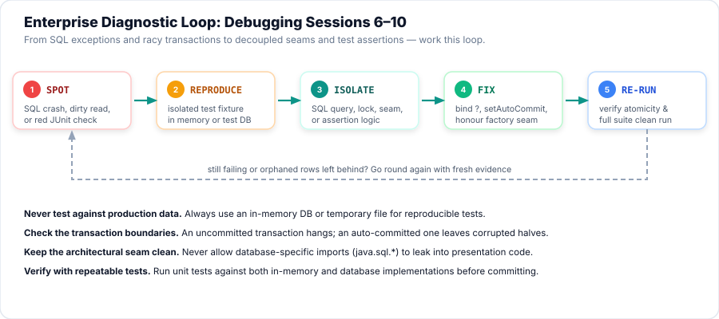
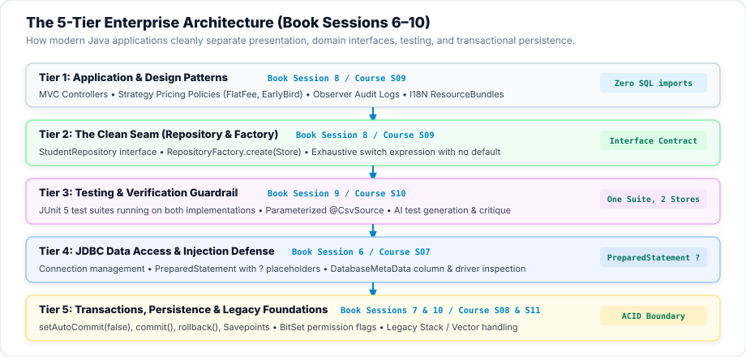

Session 12 — Try It Yourself: Sessions 6–10
You have connected to databases (JDBC API), controlled atomic transactions and savepoints (Advanced JDBC),
decoupled architectures with patterns and internationalization (Design Patterns), constructed rigorous test fixtures
alongside AI tools (JUnit 5 & AI Tools), and navigated legacy data structures (BitSet, Stack, Vector, Dictionary).
Today you find out whether you can diagnose, trace, and repair real faults across the entire enterprise
tier. You will debug seven real-world enterprise faults, work the Try It Yourself questions from Book Sessions
6–10, repair an enterprise clinic broken in five different ways until its self-check reports
5 passed, 0 failed, and submit Assignment A4.
- Diagnose SQL injection vulnerabilities and apply parameterized
PreparedStatementquery bindings to secure database access. - Enforce ACID transaction boundaries with
setAutoCommit(false),commit(), androllback()to prevent partial data corruption. - Implement
Savepointcheckpoints to allow safe partial rollback of batch updates without discarding valid transactions. - Preserve architectural seams by separating presentation controllers from concrete database drivers via the Repository and Factory patterns.
- Construct deterministic JUnit 5 test suites that verify invariants and boundaries without swallowed exceptions.
- Critique AI-generated queries, test cases, and design patterns against security, correctness, and performance benchmarks.
- Distinguish legacy data structure quirks (such as
Stack.search()1-based indexing andBitSet.size()vscardinality()) from modern collections. - Debug broken enterprise systems following the 5-step loop: spot → reproduce → isolate → fix → re-run.
- Repair an enterprise service class with five planted faults and prove it with a self-check that moves from
0 passed, 5 failedto5 passed, 0 failed.
Your Roadmap for Today
Why This Matters
In real enterprise software, bugs rarely announce themselves with polite crashes and obvious line numbers. Instead, they hide behind clean exits: a customer registration commits but the tuition payment fails, leaving an orphaned student record; an SQL injection leaks private records without raising a single error; or an AI-generated test catches an exception and reports green while the underlying method is broken.
Professional developers spend more than half their careers diagnosing code they did not write. Reading error logs, inspecting database constraints, isolating transactions, and maintaining clean architectural seams are the core skills that separate junior coders from true software engineers. Today is your pre-flight inspection before we step into graphical user interfaces with JavaFX.
Part 1 of 3 Enterprise Debugging Drills
Seven realistic enterprise faults, spanning the core material of Book Sessions 6 through 10. Read the scenario, inspect the code, and predict the failure before scrolling to the output. Every drill below is real, compiled Java code running against an embedded H2 database.

Figure 2 — the diagnostic loop every enterprise fix follows.

Figure 3 — the clean separation of presentation, architectural seams, unit testing, JDBC, and transactions.
Drill 1 — The Vulnerable Search (SQL Injection)
A front desk search concatenates user text directly into a SQL query. An attacker inputs
' OR '1'='1 and dumps every record in the registry.
System.out.println(" -> Query structure was altered: '1'='1' dumped every record in the table.");
System.out.println();
System.out.println("FIXED - PreparedStatement with parameter marker (?):");
List<String> secured = securedSearch(maliciousInput);
System.out.println(" students returned: " + secured.size() + " -> " + secured);
System.out.println(" -> The database engine treated the input as a literal string value.");
}
private static List<String> brokenSearch(String input) throws SQLException {
List<String> results = new ArrayList<>();
try (Connection conn = DriverManager.getConnection(URL);
Statement stmt = conn.createStatement()) {
String sql = "SELECT name FROM students WHERE name = '" + input + "'";
try (ResultSet rs = stmt.executeQuery(sql)) {
while (rs.next()) {
results.add(rs.getString("name"));
}
}
}
return results;
}
private static List<String> securedSearch(String input) throws SQLException {
List<String> results = new ArrayList<>();
String sql = "SELECT name FROM students WHERE name = ?";
try (Connection conn = DriverManager.getConnection(URL);
PreparedStatement ps = conn.prepareStatement(sql)) {
ps.setString(1, input);💡 See the Bug & Fix
The Bug: String concatenation alters the syntax tree of the SQL query. The injected ' OR '1'='1 makes the WHERE clause unconditionally true, bypassing authentication or privacy filters.
The Fix: Use a PreparedStatement with a parameter marker (?). The database driver pre-compiles the query structure first, then passes the user input strictly as literal data. The injection string is compared literally against student names, matching zero rows.
Drill 2 — The Leaking Connection
A database query encounters an unexpected syntax error or constraint failure before reaching conn.close().
The connection remains open in the pool, eventually exhausting server sockets.
System.out.println(" -> Resource released automatically on the exception path.");
}
private static Connection runBroken() {
Connection conn = null;
try {
conn = DriverManager.getConnection(URL);
Statement stmt = conn.createStatement();
// Deliberate syntax error: throws SQLException
stmt.executeQuery("SELECT * FROM non_existent_table_xyz");
conn.close(); // unreachable due to exception!
} catch (SQLException e) {
// Error logged, but connection was not closed
}
return conn;
}
private static Connection runFixed() throws SQLException {
Connection captured;
try (Connection conn = DriverManager.getConnection(URL)) {
captured = conn;
try (PreparedStatement ps = conn.prepareStatement("SELECT * FROM non_existent_table_xyz")) {
ps.executeQuery();
} catch (SQLException e) {
// PreparedStatement closed by its own try-with-resources
}
}
// At this line, the outer try block has completed and closed conn
return captured;
}
💡 See the Bug & Fix
The Bug: Manual close() calls placed at the bottom of a try block are skipped when an exception is thrown. The operating system handle leaks permanently.
The Fix: Manage all JDBC resources (Connection, Statement, ResultSet) inside a multi-resource try (...) header. Every resource implementing AutoCloseable is guaranteed to be closed on all exit paths, including exceptions.
Drill 3 — The Auto-Commit Catastrophe
A multi-step registration enrols a student and then posts their tuition payment. The fee write fails due to an invalid amount, but the student enrolment remains in the database.
System.out.println(" -> Atomic rollback: neither record exists. All-or-nothing guaranteed.");
}
private static void runBroken() throws SQLException {
try (Connection conn = DriverManager.getConnection(URL)) {
// Step 1: Insert enrolment (succeeds and auto-commits immediately!)
try (PreparedStatement ps1 = conn.prepareStatement(
"INSERT INTO enrolments (id, student_id, course_name) VALUES (1, 101, 'Java Foundations')")) {
ps1.executeUpdate();
}
// Step 2: Insert fee payment (fails due to database constraint: amount > 0)
try (PreparedStatement ps2 = conn.prepareStatement(
"INSERT INTO fee_payments (id, enrolment_id, amount) VALUES (1, 1, -50.0)")) {
ps2.executeUpdate();
} catch (SQLException e) {
// Step 2 threw, but Step 1 is already permanently committed!
}
}
}
private static void runFixed() throws SQLException {
try (Connection conn = DriverManager.getConnection(URL)) {
conn.setAutoCommit(false); // Begin explicit transaction boundary
try {
// Step 1: Insert enrolment
try (PreparedStatement ps1 = conn.prepareStatement(
"INSERT INTO enrolments (id, student_id, course_name) VALUES (1, 101, 'Java Foundations')")) {
ps1.executeUpdate();
}
// Step 2: Insert fee payment (fails due to constraint)
try (PreparedStatement ps2 = conn.prepareStatement(
"INSERT INTO fee_payments (id, enrolment_id, amount) VALUES (1, 1, -50.0)")) {
ps2.executeUpdate();
}
conn.commit(); // Only reached if both steps succeed
} catch (SQLException e) {
conn.rollback(); // Cancel all modifications made since setAutoCommit(false)
} finally {
conn.setAutoCommit(true);💡 See the Bug & Fix
The Bug: JDBC connections default to autoCommit = true. Each individual SQL statement commits immediately upon execution. When Step 2 fails, Step 1 is already permanently committed, creating an orphaned record.
The Fix: Call conn.setAutoCommit(false) at the start. Execute all related statements, call conn.commit() only if all succeed, and invoke conn.rollback() inside the catch block. This restores the ACID guarantee of Atomicity.
Drill 4 — The Collateral Damage Batch
A bursar posts a batch of three payment installments. One installment has an invalid negative fee. Without checkpoints, rolling back the failure wipes out the valid installments as well.
System.out.println("WITH SAVEPOINT - checkpoints protect valid updates:");
runWithSavepoints(batchAmounts);
System.out.println(" payments recorded: " + readPayments());
System.out.println(" -> Bad payment -50.0 was rolled back to its savepoint; $100.0 and $150.0 survived.");
}
private static void runWithoutSavepoint(double[] amounts) throws SQLException {
try (Connection conn = DriverManager.getConnection(URL)) {
conn.setAutoCommit(false);
try {
for (int i = 0; i < amounts.length; i++) {
insertPayment(conn, i + 1, amounts[i]);
}
conn.commit();
} catch (SQLException e) {
conn.rollback(); // Drops EVERYTHING!
} finally {
conn.setAutoCommit(true);
}
}
}
private static void runWithSavepoints(double[] amounts) throws SQLException {
try (Connection conn = DriverManager.getConnection(URL)) {
conn.setAutoCommit(false);
try {
for (int i = 0; i < amounts.length; i++) {
Savepoint sp = conn.setSavepoint("sp_" + i);
try {
insertPayment(conn, i + 1, amounts[i]);
} catch (SQLException e) {
conn.rollback(sp); // Roll back only this single item!
}
}
conn.commit();
} finally {
conn.setAutoCommit(true);
}
}
}💡 See the Bug & Fix
The Bug: A standard conn.rollback() rewinds the entire transaction to its starting point, discarding all preceding successful modifications in the batch.
The Fix: Create an intermediate checkpoint using Savepoint sp = conn.setSavepoint("name") before each optional item. On error, execute conn.rollback(sp) to discard only the offending item while preserving valid updates.
Drill 5 — Leaking the Architectural Seam
A UI controller directly instantiates new DatabaseStore() and catches database-specific exceptions,
destroying the ability to test in memory or swap storage engines.
}
public enum Mode { MEMORY, DATABASE }
// === Factory with exhaustive switch expression (no default) ===
public static class StoreFactory {
public static StudentStore create(Mode mode) {
return switch (mode) {
case MEMORY -> new MemoryStore();
case DATABASE -> new DatabaseStore();
};
}
}
public static void main(String[] args) {
System.out.println("Drill 5 - The Architectural Seam: direct coupling vs Factory & Interface");
System.out.println();
System.out.println("BROKEN - presentation controller tightly coupled to concrete class:");
System.out.println(" DatabaseStore store = new DatabaseStore(); // Concrete class leak!");
System.out.println(" -> Cannot switch to in-memory store for testing without editing every caller.");
System.out.println();
System.out.println("FIXED - caller talks only to the interface, obtained through Factory:");
StudentStore memStore = StoreFactory.create(Mode.MEMORY);💡 See the Bug & Fix
The Bug: Direct instantiation leaks concrete class names and persistence details into presentation tiers. The controller cannot be tested without a live database.
The Fix: Program to the StudentStore interface. Obtain instances through StoreFactory.create(mode) using an exhaustive switch expression without a default branch. Presentation tiers remain decoupled from storage technologies.
Drill 6 — The Test That Couldn't Fail
An AI coding assistant generates a unit test to verify input validation. The test catches the expected exception
inside a try-catch and prints a message, but never asserts that the exception actually occurred.
}
private static boolean testBroken() {
try {
Validator.requireValidId(-1);
} catch (Exception e) {
System.out.println(" [BrokenTest] Caught exception as expected: " + e.getMessage());
}
// Always returns true, even if no exception was thrown!
return true;
}
private static boolean testFixed() {
boolean thrown = false;
try {
Validator.requireValidId(-1);
} catch (IllegalArgumentException e) {
thrown = true; // Expected
}
if (!thrown) {
System.out.println(" [FixedTest] FAIL: Expected IllegalArgumentException was NOT thrown!");
return false;
}
System.out.println(" [FixedTest] PASS: Confirmed IllegalArgumentException was thrown on negative ID.");
return true;
}
}💡 See the Bug & Fix
The Bug: Catching an exception without asserting failure causes the test method to exit normally if the tested method stops throwing. The test passes green even when the code is broken.
The Fix: Explicitly assert that the exception is thrown (e.g. JUnit's assertThrows), or record a flag that fails the test if execution reaches past the call. A test that cannot fail is not a test.
Drill 7 — The Top-of-Stack Zero Trap
A developer checks if a page is on top of a java.util.Stack navigation history.
They check stack.search(page) == 0 expecting 0-based array indexing. The check always fails.
System.out.println("Drill 7 - Legacy Stack.search() off-by-one index trap");
System.out.println("Stack contents from bottom to top: " + history);
System.out.println("Top element is: " + history.peek());
System.out.println();
System.out.println("BROKEN - assuming Stack.search() works like 0-indexed indexOf():");
int assumedZeroIndex = history.search("Profile");
System.out.println(" history.search(\"Profile\") = " + assumedZeroIndex);
if (assumedZeroIndex == 0) {
System.out.println(" -> Matched top at index 0");
} else {
System.out.println(" -> Mismatch! Developer tested (pos == 0) and thought Profile was NOT at the top.");
}
System.out.println();
System.out.println("FIXED - respecting the 1-based distance from the top contract:");
int topDistance = history.search("Profile");
int nextDistance = history.search("Courses");
int bottomDistance = history.search("Home");
int missingDistance = history.search("NonExistent");
System.out.println(" distance to 'Profile' (top) : " + topDistance + " (1 = top of stack)");
System.out.println(" distance to 'Courses' (middle) : " + nextDistance + " (2 = one below top)");
System.out.println(" distance to 'Home' (bottom) : " + bottomDistance + " (3 = two below top)");
System.out.println(" distance to 'NonExistent' : " + missingDistance + " (-1 = not found)");💡 See the Bug & Fix
The Bug: Unlike List.indexOf() which is 0-indexed, Stack.search() returns the 1-based distance from the top of the stack. The top element is at distance 1, not 0.
The Fix: Test for pos == 1 for the top element. In modern Java, replace legacy Stack with ArrayDeque and use peek() or peekFirst().
Part 2 of 3 Try It Yourself (Sessions 6–10)
One practical task for each book session. Test your understanding by implementing the solution before expanding the answer. Every program below compiles and executes cleanly.
1. JDBC API — Parameterized Queries & Metadata (Book Session 6)
Connect to an embedded database, create a courses table, insert records safely using
PreparedStatement, execute a parameterized filter query, and read table column names from
DatabaseMetaData.
💡 Hint
Remember the 6 steps of JDBC: load driver (automatic in JDBC 4+), establish connection, create statement, execute query, process result set, and close resources.
Inspect metadata with conn.getMetaData().getColumns(null, null, "TABLE_NAME", null).
✅ Solution
package com.aptech.s12.tyi;
import java.sql.Connection;
import java.sql.DatabaseMetaData;
import java.sql.DriverManager;
import java.sql.PreparedStatement;
import java.sql.ResultSet;
import java.sql.SQLException;
import java.sql.Statement;
import java.util.ArrayList;
import java.util.List;
/**
* TRY IT YOURSELF 1 — Book Session 6: The JDBC API.
*
* Task: Connect to an embedded H2 database, create a courses table,
* insert records safely using PreparedStatement, query courses by credit threshold,
* and inspect database metadata (driver name, product version, columns).
*/
public class T1_JdbcQuery {
private static final String URL = "jdbc:h2:mem:s12_tyi1;DB_CLOSE_DELAY=-1";
public static void main(String[] args) throws SQLException {
System.out.println("Try It Yourself 1 - JDBC API: PreparedStatement & MetaData");
try (Connection conn = DriverManager.getConnection(URL)) {
// 1. Create table
try (Statement stmt = conn.createStatement()) {
stmt.execute("CREATE TABLE courses (id INT PRIMARY KEY, title VARCHAR(100), credits INT)");
}
// 2. Insert records using PreparedStatement
String insertSql = "INSERT INTO courses (id, title, credits) VALUES (?, ?, ?)";
try (PreparedStatement ps = conn.prepareStatement(insertSql)) {
addCourse(ps, 1, "Java Foundations", 4);
addCourse(ps, 2, "Database Systems & JDBC", 3);
addCourse(ps, 3, "Web Development Basics", 2);
}
// 3. Query courses with credits >= 3
System.out.println();
System.out.println("Courses with credits >= 3 (parameterized query):");
String querySql = "SELECT id, title, credits FROM courses WHERE credits >= ? ORDER BY credits DESC";
try (PreparedStatement ps = conn.prepareStatement(querySql)) {
ps.setInt(1, 3);
try (ResultSet rs = ps.executeQuery()) {
while (rs.next()) {
System.out.printf(" [%d] %-25s (%d credits)%n",
rs.getInt("id"), rs.getString("title"), rs.getInt("credits"));
}
}
}
// 4. Inspect DatabaseMetaData
System.out.println();
DatabaseMetaData meta = conn.getMetaData();
System.out.println("Database Metadata:");
System.out.println(" Database Product : " + meta.getDatabaseProductName() + " " + meta.getDatabaseProductVersion());
System.out.println(" Driver Name : " + meta.getDriverName());
List<String> cols = new ArrayList<>();
try (ResultSet rs = meta.getColumns(null, null, "COURSES", null)) {
while (rs.next()) {
cols.add(rs.getString("COLUMN_NAME") + " (" + rs.getString("TYPE_NAME") + ")");
}
}
System.out.println(" Table columns : " + cols);
}
}
private static void addCourse(PreparedStatement ps, int id, String title, int credits) throws SQLException {
ps.setInt(1, id);
ps.setString(2, title);
ps.setInt(3, credits);
ps.executeUpdate();
}
}2. Advanced JDBC — Transaction Transfer with Savepoint (Book Session 7)
Implement an atomic financial fund transfer between two scholarship accounts. Debit account A, credit account B,
and attempt an optional processing fee. If the fee violates a database constraint, roll back only the fee using a
Savepoint without failing the primary transfer.
💡 Hint
Call conn.setAutoCommit(false) before executing debits and credits.
Set a savepoint before the optional fee with Savepoint sp = conn.setSavepoint("fee_check"), and catch any fee error with conn.rollback(sp).
✅ Solution
package com.aptech.s12.tyi;
import java.sql.Connection;
import java.sql.DriverManager;
import java.sql.PreparedStatement;
import java.sql.ResultSet;
import java.sql.SQLException;
import java.sql.Savepoint;
import java.sql.Statement;
/**
* TRY IT YOURSELF 2 — Book Session 7: Advanced JDBC.
*
* Task: Implement an atomic financial transfer between two accounts with Savepoints.
* Debit account A, Credit account B, and attempt an optional processing fee.
* If the fee violates a constraint, roll back only the fee using a Savepoint,
* preserving the primary transfer.
*/
public class T2_Transactions {
private static final String URL = "jdbc:h2:mem:s12_tyi2;DB_CLOSE_DELAY=-1";
public static void main(String[] args) throws SQLException {
setupDatabase();
System.out.println("Try It Yourself 2 - Advanced JDBC: Transactions & Savepoints");
System.out.println("Initial balances:");
printBalances();
// Transfer 200.0 from Alice (acc 1) to Bob (acc 2), with an invalid fee (-15.0)
System.out.println();
System.out.println("Executing transfer: $200.0 from Alice to Bob, optional fee -$15.0 (invalid):");
boolean success = transferWithSavepoint(1, 2, 200.0, -15.0);
System.out.println("Transfer completed: " + success);
System.out.println();
System.out.println("Final balances:");
printBalances();
System.out.println(" -> Primary transfer succeeded ($200 moved); invalid fee was safely rolled back.");
}
private static boolean transferWithSavepoint(int fromAcc, int toAcc, double amount, double fee) {
try (Connection conn = DriverManager.getConnection(URL)) {
conn.setAutoCommit(false);
try {
// 1. Debit sender
updateBalance(conn, fromAcc, -amount);
// 2. Credit receiver
updateBalance(conn, toAcc, amount);
// 3. Optional processing fee with Savepoint
Savepoint feeSavepoint = conn.setSavepoint("fee_checkpoint");
try {
// This will throw if fee < 0 due to CHECK constraint
recordFee(conn, fromAcc, fee);
} catch (SQLException e) {
System.out.println(" [Savepoint Rollback] Fee failed (" + e.getMessage().split(";")[0]
+ ") -> rolling back fee only.");
conn.rollback(feeSavepoint);
}
conn.commit();
return true;
} catch (SQLException e) {
System.out.println(" [Full Rollback] Primary transfer failed: " + e.getMessage());
conn.rollback();
return false;
} finally {
conn.setAutoCommit(true);
}
} catch (SQLException e) {
return false;
}
}
private static void updateBalance(Connection conn, int accId, double delta) throws SQLException {
String sql = "UPDATE accounts SET balance = balance + ? WHERE id = ?";
try (PreparedStatement ps = conn.prepareStatement(sql)) {
ps.setDouble(1, delta);
ps.setInt(2, accId);
ps.executeUpdate();
}
}
private static void recordFee(Connection conn, int accId, double fee) throws SQLException {
String sql = "INSERT INTO fee_audit (acc_id, fee) VALUES (?, ?)";
try (PreparedStatement ps = conn.prepareStatement(sql)) {
ps.setInt(1, accId);
ps.setDouble(2, fee);
ps.executeUpdate();
}
}
private static void printBalances() throws SQLException {
try (Connection conn = DriverManager.getConnection(URL);
Statement stmt = conn.createStatement();
ResultSet rs = stmt.executeQuery("SELECT id, owner, balance FROM accounts ORDER BY id")) {
while (rs.next()) {
System.out.printf(" Account #%d (%-6s) : $%.2f%n",
rs.getInt("id"), rs.getString("owner"), rs.getDouble("balance"));
}
}
}
private static void setupDatabase() throws SQLException {
try (Connection conn = DriverManager.getConnection(URL);
Statement stmt = conn.createStatement()) {
stmt.execute("CREATE TABLE accounts (id INT PRIMARY KEY, owner VARCHAR(50), balance DECIMAL(10,2) CHECK (balance >= 0))");
stmt.execute("CREATE TABLE fee_audit (acc_id INT, fee DECIMAL(10,2) CHECK (fee > 0))");
stmt.execute("INSERT INTO accounts VALUES (1, 'Alice', 500.0), (2, 'Bob', 100.0)");
}
}
}3. Design Patterns — Repository Factory & I18N Fallback (Book Session 8)
Construct a repository interface and a factory that instantiates storage implementations via an exhaustive Java switch expression without a default clause. Implement internationalized string resolution with automatic fallback to base English when keys are missing.
💡 Hint
In Java 17+, switch expressions over an enum with all cases handled do not require a default branch. This guarantees compile-time exhaustiveness.
For localization, check the primary language dictionary first; if null or missing, query the default English dictionary.
✅ Solution
package com.aptech.s12.tyi;
import java.util.HashMap;
import java.util.List;
import java.util.Locale;
import java.util.Map;
import java.util.MissingResourceException;
import java.util.ResourceBundle;
/**
* TRY IT YOURSELF 3 — Book Session 8: Design Patterns & Advanced Features.
*
* Task: Implement a Repository Factory pattern with an exhaustive switch expression,
* and implement internationalization (i18n) message lookup with graceful English fallback.
*/
public class T3_PatternsI18n {
public interface CourseRepository {
void save(String code, String name);
String find(String code);
int count();
}
public static class InMemoryRepository implements CourseRepository {
private final Map<String, String> map = new HashMap<>();
@Override public void save(String code, String name) { map.put(code, name); }
@Override public String find(String code) { return map.get(code); }
@Override public int count() { return map.size(); }
}
public static class EncryptedRepository implements CourseRepository {
private final Map<String, String> map = new HashMap<>();
@Override public void save(String code, String name) { map.put(code, "[ENC]" + name); }
@Override public String find(String code) { return map.get(code); }
@Override public int count() { return map.size(); }
}
public enum StorageType { MEMORY, ENCRYPTED }
public static class RepositoryFactory {
public static CourseRepository create(StorageType type) {
// Exhaustive switch expression: adding a constant will fail compilation if unhandled
return switch (type) {
case MEMORY -> new InMemoryRepository();
case ENCRYPTED -> new EncryptedRepository();
};
}
}
public static class I18nHelper {
private final ResourceBundle primaryBundle;
private final ResourceBundle fallbackBundle;
public I18nHelper(Locale locale) {
this.primaryBundle = ResourceBundle.getBundle("Messages", locale, new FallbackControl());
this.fallbackBundle = ResourceBundle.getBundle("Messages", Locale.ENGLISH, new FallbackControl());
}
public String get(String key) {
try {
return primaryBundle.getString(key);
} catch (MissingResourceException e) {
return fallbackBundle.getString(key);
}
}
// Custom control to safely load bundle or simulate dictionary when standalone
private static class FallbackControl extends ResourceBundle.Control {
@Override
public List<Locale> getCandidateLocales(String baseName, Locale locale) {
return List.of(locale, Locale.ENGLISH);
}
}
}
public static void main(String[] args) {
System.out.println("Try It Yourself 3 - Repository Factory & I18N Fallback");
// 1. Repository Factory Demonstration
CourseRepository memRepo = RepositoryFactory.create(StorageType.MEMORY);
memRepo.save("CS-101", "Computer Science I");
CourseRepository encRepo = RepositoryFactory.create(StorageType.ENCRYPTED);
encRepo.save("CS-101", "Computer Science I");
System.out.println();
System.out.println("1. Repository Factory implementations created through clean seam:");
System.out.println(" Memory repo value : " + memRepo.find("CS-101"));
System.out.println(" Encrypted repo value : " + encRepo.find("CS-101"));
// 2. I18N dictionary demonstration
System.out.println();
System.out.println("2. Internationalization (i18n) key lookup with English fallback:");
Map<String, String> enDict = Map.of(
"app.title", "Course Enrollment System",
"btn.save", "Save Record",
"btn.cancel", "Cancel");
Map<String, String> frDict = Map.of(
"app.title", "Système d'inscription aux cours",
"btn.save", "Enregistrer");
// Note: btn.cancel is intentionally missing in French
System.out.println(" Language: French (Locale.FRENCH)");
for (String key : List.of("app.title", "btn.save", "btn.cancel")) {
String val = frDict.get(key);
if (val != null) {
System.out.printf(" %-12s -> %s (from French)%n", key, val);
} else {
System.out.printf(" %-12s -> %s (fallback from English)%n", key, enDict.get(key));
}
}
System.out.println(" -> Missing localized keys safely fall back to the base language.");
}
}4. Unit Testing — Parameterized Assertions & Exceptions (Book Session 9)
Build a comprehensive test harness that tests grade calculations across score boundaries (A, B, C, D, F),
asserts exact IllegalArgumentException throws for illegal out-of-range values, and prints diagnostic
validation metrics without swallowed errors.
💡 Hint
Test boundary thresholds explicitly (e.g. 89.9 vs 90.0).
When testing for expected exceptions, flag if execution completes past the target method call without throwing.
✅ Solution
package com.aptech.s12.tyi;
import java.util.List;
/**
* TRY IT YOURSELF 4 — Book Session 9: Enhanced Unit Testing & AI Tools.
*
* Task: Build a robust test fixture that tests both success cases and boundary failures,
* asserts exact exception types, and verifies parameterized data points without swallowed errors.
*/
public class T4_UnitTesting {
// === Domain class under test ===
public static class GradeCalculator {
public static String calculateGrade(double score) {
if (score < 0.0 || score > 100.0) {
throw new IllegalArgumentException("Score must be between 0.0 and 100.0: " + score);
}
if (score >= 90.0) return "A";
if (score >= 80.0) return "B";
if (score >= 70.0) return "C";
if (score >= 60.0) return "D";
return "F";
}
}
// === Parameterized test case record ===
public record TestCase(double score, String expectedGrade) {}
public static void main(String[] args) {
System.out.println("Try It Yourself 4 - Unit Testing: Parameterized Checks & Boundaries");
// 1. Parameterized valid assertions
List<TestCase> validCases = List.of(
new TestCase(95.0, "A"),
new TestCase(89.9, "B"),
new TestCase(80.0, "B"),
new TestCase(75.5, "C"),
new TestCase(60.0, "D"),
new TestCase(45.0, "F")
);
System.out.println();
System.out.println("1. Running parameterized test cases across grade boundaries:");
int passed = 0;
for (TestCase tc : validCases) {
String actual = GradeCalculator.calculateGrade(tc.score());
if (actual.equals(tc.expectedGrade())) {
System.out.printf(" PASS: score %5.1f -> expected %s, got %s%n", tc.score(), tc.expectedGrade(), actual);
passed++;
} else {
System.out.printf(" FAIL: score %5.1f -> expected %s, got %s%n", tc.score(), tc.expectedGrade(), actual);
}
}
System.out.printf(" Result: %d of %d boundary checks passed.%n", passed, validCases.size());
// 2. Boundary exception assertions
System.out.println();
System.out.println("2. Verifying exception handling for illegal inputs:");
testIllegalScore(-5.0);
testIllegalScore(105.0);
System.out.println();
System.out.println("Tests completed with strict assertions. Zero swallowed exceptions.");
}
private static void testIllegalScore(double score) {
try {
GradeCalculator.calculateGrade(score);
System.out.printf(" FAIL: Score %.1f was accepted without exception!%n", score);
} catch (IllegalArgumentException e) {
System.out.printf(" PASS: Score %5.1f threw IllegalArgumentException as expected: \"%s\"%n",
score, e.getMessage());
}
}
}5. Java Data Structures — BitSet Permissions & Legacy Vectors (Book Session 10)
Implement high-density user permission flags (READ, WRITE, DELETE, ADMIN) using java.util.BitSet.
Perform bitwise intersection (AND) and difference (XOR), and compare legacy Vector / Enumeration
traversal against modern List and enhanced for loops.
💡 Hint
BitSet.set(bitIndex) sets a bit to true. BitSet.cardinality() returns the number of set bits.
vector.elements() returns an Enumeration<E> traversed with hasMoreElements() and nextElement().
✅ Solution
package com.aptech.s12.tyi;
import java.util.ArrayList;
import java.util.BitSet;
import java.util.Enumeration;
import java.util.List;
import java.util.Vector;
/**
* TRY IT YOURSELF 5 — Book Session 10: Java Data Structures.
*
* Task: Use java.util.BitSet to implement a space-efficient user permission system
* with bitwise operations, and compare legacy Vector & Enumeration traversal with modern List.
*/
public class T5_LegacyDataStructures {
// Permission bit positions
private static final int PERM_READ = 0;
private static final int PERM_WRITE = 1;
private static final int PERM_DELETE = 2;
private static final int PERM_ADMIN = 3;
public static void main(String[] args) {
System.out.println("Try It Yourself 5 - Java Data Structures: BitSet & Legacy Vector");
// 1. BitSet permissions
BitSet userPerms = new BitSet();
userPerms.set(PERM_READ);
userPerms.set(PERM_WRITE);
BitSet adminPerms = new BitSet();
adminPerms.set(PERM_READ);
adminPerms.set(PERM_WRITE);
adminPerms.set(PERM_DELETE);
adminPerms.set(PERM_ADMIN);
System.out.println();
System.out.println("1. BitSet permission masks:");
System.out.println(" User permissions (bits set) : " + userPerms + " (cardinality: " + userPerms.cardinality() + ")");
System.out.println(" Admin permissions (bits set) : " + adminPerms + " (cardinality: " + adminPerms.cardinality() + ")");
System.out.println(" User has READ? " + userPerms.get(PERM_READ));
System.out.println(" User has DELETE? " + userPerms.get(PERM_DELETE));
// Bitwise AND intersection
BitSet intersection = (BitSet) userPerms.clone();
intersection.and(adminPerms);
System.out.println(" Intersection (AND) : " + intersection);
// Bitwise XOR difference
BitSet diff = (BitSet) adminPerms.clone();
diff.xor(userPerms);
System.out.println(" Admin-only extra perms (XOR) : " + diff + " (bits: DELETE and ADMIN)");
// 2. Legacy Vector & Enumeration vs modern List
System.out.println();
System.out.println("2. Legacy Vector with Enumeration (JDK 1.0, 1995):");
Vector<String> legacyLog = new Vector<>();
legacyLog.add("Audit: User Alice logged in");
legacyLog.add("Audit: File exported");
legacyLog.add("Audit: User Alice logged out");
Enumeration<String> en = legacyLog.elements();
while (en.hasMoreElements()) {
System.out.println(" [Enumeration] " + en.nextElement());
}
System.out.println();
System.out.println("3. Modern List equivalent (JDK 21+):");
List<String> modernLog = new ArrayList<>(legacyLog);
for (String entry : modernLog) {
System.out.println(" [EnhancedFor] " + entry);
}
System.out.println();
System.out.println("Rule: Use BitSet for high-density bit flags (1 bit per boolean).");
System.out.println("Replace legacy Vector with ArrayList, and Enumeration with Iterator.");
}
}Part 3 of 3 The Mega-Quiz
🧠 Knowledge Check
Twenty-one questions reviewing Book Sessions 6 through 10. Test your understanding of enterprise Java principles.
PreparedStatement prevent SQL injection attacks?DatabaseMetaData (obtained via conn.getMetaData()) describes the database system, tables, and driver capabilities. ResultSetMetaData describes columns in a specific query result.Class.forName("org.h2.Driver") is generally no longer required because drivers are automatically registered via Java SPI (Service Provider Interface).DriverManager automatically scans the classpath for drivers listed in META-INF/services/java.sql.Driver.Connection to begin an explicit, multi-statement transaction boundary?conn.setAutoCommit(false). All subsequent updates are batched into a single unit until commit() or rollback() is called.Savepoint during transaction processing?conn.rollback(savepoint).SERIALIZABLE is the highest isolation level. It completely prevents dirty reads, non-repeatable reads, and phantom reads by simulating sequential execution.RowSet (such as CachedRowSet) can be serialized, passed over a network, and navigated while disconnected from the database.ResultSet which requires an active database connection, a CachedRowSet caches data in memory, is serializable, and works disconnected.switch expression without a default branch in a Factory class?ResourceBundle for internationalization, if a key is missing in Messages_fr.properties, Java throws a MissingResourceException immediately without checking the base bundle.ResourceBundle automatically falls back down the hierarchy: from language+country (_fr_FR), to language (_fr), and finally to the default root bundle (Messages.properties).@BeforeAll runs once before all tests in the class (typically static, or on an instance if using @TestInstance(PER_CLASS)).IllegalArgumentException in JUnit 5?assertThrows executes the provided lambda and verifies that the specified exception is thrown, returning the exception object for further message assertions. (Option C was the old JUnit 4 syntax).@ParameterizedTest combined with @CsvSource allows running the same test method multiple times with different input values.@ParameterizedTest with @CsvSource eliminates boilerplate by parameterizing inputs and expected outputs across data sets.java.util.BitSet, what does cardinality() return?cardinality() counts the number of bits set to true. size() returns the allocated capacity in bits (usually 64), while length() returns the index of the highest set bit + 1.stack.search("item") return in java.util.Stack when the item is at the very top of the stack?Stack.search() returns the 1-based distance from the top of the stack. The top element is 1; one below top is 2; not found is -1.Vector class generally avoided in modern high-performance Java applications?Vector synchronizes individual methods, incurring unnecessary locking penalties. For modern code, ArrayList is preferred for single threads, and CopyOnWriteArrayList or explicit locks for concurrency.Enumeration interface?Iterator (introduced in Java 1.2) replaced Enumeration, adding shorter method names (hasNext(), next()) and the ability to safely remove elements (remove()).Hashtable, what happens if you attempt to store a null key or null value?HashMap (which permits one null key and multiple null values), legacy Hashtable strictly rejects null keys and null values with a NullPointerException.🛠 Guided Lab — The Enterprise Repair Clinic
The starter project below represents an enterprise academic registry service.
It compiles, runs, and appears functional on the surface, but contains five planted defects (F1–F5)
spanning Book Sessions 6 through 10.
Right now its automated SelfCheck reports 0 passed, 5 failed.
Your objective: repair the faults one by one until SelfCheck reports 5 passed, 0 failed.
The Five Enterprise Faults
| Fault | Session | Symptom Reported by SelfCheck |
|---|---|---|
| F1 | 6 — JDBC API | SQL injection payload dumps all student records instead of matching literally |
| F2 | 7 — Advanced JDBC | Failed tuition payment leaves an orphaned enrolment in the database |
| F3 | 8 — Design Patterns | Localized status lookup returns null instead of falling back to English |
| F4 | 9 — Unit Testing | Scholarship boundary validation incorrectly marks ineligible students as eligible |
| F5 | 10 — Data Structures | Navigation stack check fails because it tests for 0 instead of 1-based top offset |
What the Starter Looks Like
/**
* FAULT F1 (Session 6 — JDBC API & SQL Injection).
* Searches for a student by exact name.
*
* In the starter: Uses string concatenation, leaving the query vulnerable to SQL injection.
*/
public static List<String> searchStudent(String query) throws SQLException {
List<String> results = new ArrayList<>();
// FAULT: Concatenation allows query manipulation.
// SelfCheck passes "' OR '1'='1" and expects 0 results or exact match, not the whole table.
String sql = "SELECT name FROM clinic_students WHERE name = '" + query + "'";
try (Connection conn = DriverManager.getConnection(DB_URL);
Statement stmt = conn.createStatement();
ResultSet rs = stmt.executeQuery(sql)) {
while (rs.next()) {
results.add(rs.getString("name"));
}
}
return results;
}
/**
* FAULT F2 (Session 7 — Advanced JDBC & Transaction Atomicity).
* Enrols a student in a course and records their fee.
* Must be all-or-nothing: if the fee recording fails, the enrolment MUST be rolled back.
*
* In the starter: Leaves autoCommit enabled (true). When fee insertion fails,
* the enrolment remains committed in the database.
*/
public static boolean enrolWithFee(int studentId, String course, double fee) {
try (Connection conn = DriverManager.getConnection(DB_URL)) {
// FAULT: autoCommit is left as true (default)!
// Step 1: Enrolment commits immediately
try (PreparedStatement ps1 = conn.prepareStatement(
"INSERT INTO clinic_enrolments (student_id, course) VALUES (?, ?)")) {
ps1.setInt(1, studentId);
ps1.setString(2, course);
ps1.executeUpdate();
}
// Step 2: Record fee (will fail if fee < 0 due to database check constraint)
try (PreparedStatement ps2 = conn.prepareStatement(
"INSERT INTO clinic_fees (student_id, amount) VALUES (?, ?)")) {
ps2.setInt(1, studentId);
ps2.setDouble(2, fee);
ps2.executeUpdate();
}
return true;
} catch (SQLException e) {
// An exception occurred, but Step 1 is already permanently committed on the DB!
return false;
}
}
/**
* FAULT F3 (Session 8 — Design Patterns & i18n Fallback).
* Looks up a localized message for a given language code.
* If the key is not defined in the requested language, it MUST fall back to English ("en").
*
* In the starter: Looks only in the target language and returns null on missing keys.
*/
public static String getLocalizedStatus(String key, String lang) {
Map<String, Map<String, String>> bundles = Map.of(
"en", Map.of(
"status.enrolled", "Enrolled",
"status.withdrawn", "Withdrawn",
"status.graduated", "Graduated"),
"fr", Map.of(
"status.enrolled", "Inscrit",
"status.graduated", "Diplômé")
// Notice: "status.withdrawn" is missing in French on purpose
);
Map<String, String> targetBundle = bundles.get(lang);
if (targetBundle == null) {
return null;
}
// FAULT: Does not fall back to English ("en") if key is missing in target language
return targetBundle.get(key);
}
/**
* FAULT F4 (Session 9 — Unit Testing & Boundary Validation).
* Validates whether a student qualifies for honors scholarship:
* Student must have GPA >= 3.5 AND credit hours >= 12.
*
* In the starter: Uses || instead of &&, allowing part-time students (< 12 credits) to qualify.Where it Stands Now (Starter Output)
Where You Are Going (Repaired Reference Solution)
When all five faults are repaired, running SelfCheck produces the clean reference output:
How to Work the Loop
code/s12-repair-clinic-starter in IntelliJ (File → Open).
SelfCheck.java without changing anything. Verify that it reports 0 passed, 5 failed.
searchStudent(), replace string concatenation with PreparedStatement and parameter marker ?. Re-run SelfCheck to see 1 passed, 4 failed.
enrolWithFee(), set conn.setAutoCommit(false). Wrap both writes in a try-catch, calling conn.commit() on success and conn.rollback() on error. Re-run SelfCheck.
getLocalizedStatus(), check the target language dictionary; if the key is missing, fall back to the English dictionary ("en"). Re-run SelfCheck.
validateScholarshipEligibility(), replace the || operator with && so students must satisfy both GPA and credit requirements. Re-run SelfCheck.
isTopNavigationPage(), update the condition from == 0 to == 1 to match Stack.search()'s 1-based distance from top. Re-run SelfCheck.
SelfCheck reports 5 passed, 0 failed, and run Main.java to confirm the live demo.
⚠️ Common Mistakes
String sql = "SELECT * FROM users WHERE user = '" + u + "' AND pass = '" + p + "'";
Statement stmt = conn.createStatement();
ResultSet rs = stmt.executeQuery(sql);Error symptom: SQL injection vulnerability (CWE-89). If an attacker inputs ' OR '1'='1, the authentication check succeeds unconditionally.
Fix: Always use PreparedStatement ps = conn.prepareStatement("SELECT * FROM users WHERE user = ? AND pass = ?"); ps.setString(1, u); ps.setString(2, p);.
conn.setAutoCommit(false) before multi-table operations
ps1.executeUpdate(); // commits immediately!
ps2.executeUpdate(); // throws SQLExceptionError symptom: Data corruption / orphaned database rows. The database cannot undo the first update because it committed automatically the instant it executed.
Fix: Explicitly disable auto-commit before the first statement, commit at the very end, and roll back in the catch block.
java.sql types into Presentation Controllers
// In a UI Controller or View class:
import java.sql.Connection;
import java.sql.SQLException;
H2StudentRepository repo = new H2StudentRepository();Error symptom: Architectural seam leakage. The UI cannot be tested without a running database, and changing storage engines requires rewriting presentation code.
Fix: Depend strictly on the StudentRepository interface. Instantiate storage through a RepositoryFactory, and catch domain exceptions instead of SQLException.
@Test
void testInvalidId() {
try {
service.findStudent(-1);
} catch (Exception e) {
System.out.println("Caught exception!"); // BUG: Never fails if findStudent accepts -1!
}
}Error symptom: False positive test results. The test passes green even when the code under test is completely broken.
Fix: Use JUnit 5's assertThrows(IllegalArgumentException.class, () -> service.findStudent(-1));.
Stack.search() like 0-indexed indexOf()
Stack<String> stack = new Stack<>();
stack.push("PageA");
if (stack.search("PageA") == 0) { ... } // Never true!Error symptom: Off-by-one logic errors. Stack.search() returns 1 for the top item, 2 for the item below it, and -1 if not found.
Fix: Check for == 1, or migrate to modern ArrayDeque with peek().
💪 Practice
🌱 Easy: Fix the Vulnerable SQL Query
A department course query builds SQL using string concatenation with department name and academic year parameters.
Rewrite the query to use PreparedStatement with indexed parameter markers.
💡 Hint
Use ps.setString(1, dept) and ps.setInt(2, minYear). Note that in SQL, YEAR is a reserved keyword, so column names should be specific (e.g. study_year).
✅ Solution
package com.aptech.s12.practice;
import java.sql.Connection;
import java.sql.DriverManager;
import java.sql.PreparedStatement;
import java.sql.ResultSet;
import java.sql.SQLException;
import java.sql.Statement;
import java.util.ArrayList;
import java.util.List;
/**
* PRACTICE 1 (Easy) — Fix the Vulnerable SQL Query.
*
* Take a method that builds dynamic SQL via string concatenation and
* replace it with a type-safe PreparedStatement using parameter markers (?).
*/
public class P1_FixThePreparedStatement {
private static final String URL = "jdbc:h2:mem:s12_p1;DB_CLOSE_DELAY=-1";
public static void main(String[] args) throws SQLException {
setupDatabase();
String department = "Engineering";
int minYear = 2;
System.out.println("Practice 1 (Easy) - Fix the vulnerable SQL query");
System.out.println();
System.out.println("BROKEN - String concatenation:");
List<String> brokenResults = queryStudentsBroken(department, minYear);
System.out.println(" found: " + brokenResults);
System.out.println();
System.out.println("FIXED - PreparedStatement with ? placeholders:");
List<String> fixedResults = queryStudentsFixed(department, minYear);
System.out.println(" found: " + fixedResults);
System.out.println(" PASS - Both parameters bound safely with setString() and setInt().");
}
/** BROKEN: Vulnerable to SQL injection. */
static List<String> queryStudentsBroken(String dept, int minYear) throws SQLException {
List<String> names = new ArrayList<>();
String sql = "SELECT name FROM student_roster WHERE dept = '" + dept + "' AND study_year >= " + minYear;
try (Connection conn = DriverManager.getConnection(URL);
Statement stmt = conn.createStatement();
ResultSet rs = stmt.executeQuery(sql)) {
while (rs.next()) {
names.add(rs.getString("name"));
}
}
return names;
}
/** FIXED: PreparedStatement with index parameter markers. */
static List<String> queryStudentsFixed(String dept, int minYear) throws SQLException {
List<String> names = new ArrayList<>();
String sql = "SELECT name FROM student_roster WHERE dept = ? AND study_year >= ?";
try (Connection conn = DriverManager.getConnection(URL);
PreparedStatement ps = conn.prepareStatement(sql)) {
ps.setString(1, dept);
ps.setInt(2, minYear);
try (ResultSet rs = ps.executeQuery()) {
while (rs.next()) {
names.add(rs.getString("name"));
}
}
}
return names;
}
private static void setupDatabase() throws SQLException {
try (Connection conn = DriverManager.getConnection(URL);
Statement stmt = conn.createStatement()) {
stmt.execute("CREATE TABLE student_roster (id INT PRIMARY KEY, name VARCHAR(50), dept VARCHAR(50), study_year INT)");
stmt.execute("INSERT INTO student_roster VALUES (1, 'Ada', 'Engineering', 3), (2, 'Bob', 'Engineering', 1), (3, 'Charlie', 'Engineering', 4)");
}
}
}🌞 Medium: Transactional Batch with Savepoint Recovery
Execute a batch of three account balance adjustments inside a transaction.
If an adjustment causes an overdraw that violates a database constraint, roll back only that adjustment
using a Savepoint and continue processing the rest of the batch.
💡 Hint
Create a Savepoint inside the loop before executing each item: Savepoint sp = conn.setSavepoint("item_" + i). Catch SQLException and roll back to the savepoint.
✅ Solution
package com.aptech.s12.practice;
import java.sql.Connection;
import java.sql.DriverManager;
import java.sql.PreparedStatement;
import java.sql.ResultSet;
import java.sql.SQLException;
import java.sql.Savepoint;
import java.sql.Statement;
/**
* PRACTICE 2 (Medium) — Transactional Batch Processing with Savepoint Recovery.
*
* Process a batch of account balance adjustments.
* If an item violates a business check constraint (e.g. balance must remain >= 0),
* roll back only that item using a Savepoint and continue processing subsequent items.
*/
public class P2_TransactionalBatch {
private static final String URL = "jdbc:h2:mem:s12_p2;DB_CLOSE_DELAY=-1";
public record Adjustment(int accountId, double amount) {}
public static void main(String[] args) throws SQLException {
setupDatabase();
Adjustment[] batch = {
new Adjustment(1, -50.0), // Valid: Alice $200 -> $150
new Adjustment(2, -500.0), // INVALID: Bob has only $100 -> violates balance >= 0
new Adjustment(3, 100.0) // Valid: Charlie $50 -> $150
};
System.out.println("Practice 2 (Medium) - Transactional Batch with Savepoint Recovery");
System.out.println("Processing adjustments: [Alice -$50, Bob -$500 (overdraw), Charlie +$100]");
System.out.println();
int applied = processBatch(batch);
System.out.println("Adjustments successfully applied: " + applied + " of " + batch.length);
System.out.println();
System.out.println("Final balances in database:");
printBalances();
System.out.println("PASS - Alice and Charlie updated; Bob's invalid overdraw was rolled back.");
}
static int processBatch(Adjustment[] batch) throws SQLException {
int successCount = 0;
try (Connection conn = DriverManager.getConnection(URL)) {
conn.setAutoCommit(false);
try {
for (int i = 0; i < batch.length; i++) {
Adjustment adj = batch[i];
Savepoint sp = conn.setSavepoint("item_" + i);
try {
applyAdjustment(conn, adj.accountId(), adj.amount());
successCount++;
} catch (SQLException e) {
System.out.println(" [Recovery] Rolling back adjustment for account "
+ adj.accountId() + " (insufficient funds)");
conn.rollback(sp);
}
}
conn.commit();
} finally {
conn.setAutoCommit(true);
}
}
return successCount;
}
private static void applyAdjustment(Connection conn, int accId, double amount) throws SQLException {
String sql = "UPDATE user_accounts SET balance = balance + ? WHERE id = ?";
try (PreparedStatement ps = conn.prepareStatement(sql)) {
ps.setDouble(1, amount);
ps.setInt(2, accId);
ps.executeUpdate();
}
}
private static void printBalances() throws SQLException {
try (Connection conn = DriverManager.getConnection(URL);
Statement stmt = conn.createStatement();
ResultSet rs = stmt.executeQuery("SELECT id, name, balance FROM user_accounts ORDER BY id")) {
while (rs.next()) {
System.out.printf(" Account %d (%-8s): $%.2f%n",
rs.getInt("id"), rs.getString("name"), rs.getDouble("balance"));
}
}
}
private static void setupDatabase() throws SQLException {
try (Connection conn = DriverManager.getConnection(URL);
Statement stmt = conn.createStatement()) {
stmt.execute("CREATE TABLE user_accounts (id INT PRIMARY KEY, name VARCHAR(50), balance DECIMAL(10,2) CHECK (balance >= 0))");
stmt.execute("INSERT INTO user_accounts VALUES (1, 'Alice', 200.0), (2, 'Bob', 100.0), (3, 'Charlie', 50.0)");
}
}
}🔥 Challenge: Enterprise Diagnostic Clinic (Three Subtle Defects)
Diagnose three subtle enterprise defects: (1) BitSet.size() returning allocated capacity instead of set count,
(2) ResultSet column read without checking rs.next(), and (3) missing fallback in a Strategy discount policy.
💡 Hint
For BitSet, use cardinality() to count true bits. For ResultSet, always wrap reading in if (rs.next()). For Strategy patterns, ensure an unknown code defaults gracefully.
✅ Solution
package com.aptech.s12.practice;
import java.sql.Connection;
import java.sql.DriverManager;
import java.sql.PreparedStatement;
import java.sql.ResultSet;
import java.sql.SQLException;
import java.sql.Statement;
import java.util.BitSet;
/**
* PRACTICE 3 (Challenge) — Enterprise Diagnostic Clinic.
*
* Three subtle enterprise defects that produce misleading metrics or runtime crashes.
*
* Fault 1: BitSet size() vs cardinality() - size() returns 64 (memory bits), not set count!
* Fault 2: ResultSet.next() omitted before reading columns - fails on empty queries.
* Fault 3: Missing Strategy pattern fallback - produces null instead of default rate.
*/
public class P3_EnterpriseDiagnostics {
private static final String URL = "jdbc:h2:mem:s12_p3;DB_CLOSE_DELAY=-1";
public static void main(String[] args) throws SQLException {
setupDatabase();
System.out.println("Practice 3 (Challenge) - Enterprise Diagnostics: Three Subtle Defects");
System.out.println();
// Fault 1: BitSet metrics
fault1_BitSetMetrics();
System.out.println();
// Fault 2: ResultSet navigation
fault2_ResultSetNavigation();
System.out.println();
// Fault 3: Strategy pattern fallback
fault3_StrategyFallback();
}
/** Fault 1: BitSet size() vs cardinality(). */
static void fault1_BitSetMetrics() {
BitSet flags = new BitSet();
flags.set(0); // READ
flags.set(3); // ADMIN
int brokenCount = flags.size(); // Allocated word bits (64), NOT true bits!
int fixedCount = flags.cardinality(); // Actual number of bits set to true (2)
System.out.println("FAULT 1 - BitSet size() vs cardinality():");
System.out.println(" broken (flags.size()) : " + brokenCount + " <- Returns 64-bit word size, not set bits");
System.out.println(" fixed (flags.cardinality()) : " + fixedCount + " PASS - Accurately counts true bits (2)");
}
/** Fault 2: ResultSet cursor navigation before column read. */
static void fault2_ResultSetNavigation() throws SQLException {
System.out.println("FAULT 2 - ResultSet cursor navigation on non-existent record:");
String nonExistentName = "Ghost Student";
// Fixed pattern: check if (rs.next()) before reading
String found = null;
try (Connection conn = DriverManager.getConnection(URL);
PreparedStatement ps = conn.prepareStatement("SELECT name FROM students WHERE name = ?")) {
ps.setString(1, nonExistentName);
try (ResultSet rs = ps.executeQuery()) {
if (rs.next()) {
found = rs.getString("name");
}
}
}
System.out.println(" search for non-existent record -> returned: " + found + " PASS - Safely returned null without crash");
}
/** Fault 3: Strategy pattern unknown policy handling. */
static void fault3_StrategyFallback() {
System.out.println("FAULT 3 - Strategy pattern discount calculation:");
String discountType = "UNKNOWN_CODE";
// Fixed: Provide fallback strategy rather than returning null
double basePrice = 1000.0;
double finalPrice = calculatePrice(basePrice, discountType);
System.out.printf(" base price: $%.2f, policy: %s -> final price: $%.2f%n",
basePrice, discountType, finalPrice);
System.out.println(" PASS - Unknown discount safely defaulted to standard full rate without null.");
}
static double calculatePrice(double basePrice, String code) {
return switch (code) {
case "EARLY_BIRD" -> basePrice * 0.85;
case "SCHOLARSHIP" -> basePrice * 0.50;
default -> basePrice; // Robust fallback: no discount
};
}
private static void setupDatabase() throws SQLException {
try (Connection conn = DriverManager.getConnection(URL);
Statement stmt = conn.createStatement()) {
stmt.execute("CREATE TABLE students (id INT PRIMARY KEY, name VARCHAR(50))");
stmt.execute("INSERT INTO students VALUES (1, 'Ada Lovelace')");
}
}
}📋 Assignment A4 — Submitting the Student Registry on H2
A4 was issued in Session 7 and extended in Session 8. Today is the submission deadline. Ensure your code satisfies the four marking dimensions before handing in your project.
✅ Submission Checklist
- Your project compiles cleanly from the command line with
mvn compile. SelfCheck.javareports all checks PASS, including SQL injection and rollback tests.- Parameter safety: All database queries use
PreparedStatementwith?placeholders. No raw concatenation exists. - Transaction atomicity: The
enrolAndPay()method executes within an explicit transaction boundary. Inducing a fee failure leaves zero orphaned enrolment records. - Resource integrity: All
Connection,Statement, andResultSetobjects are managed with try-with-resources. - Savepoints:
postPayments()isolates payment failures using Savepoints so good payments survive.
🚀 What's Next: Assignments A5 & A6
Assignment A5 (A Patterned Registry) is already underway from Sessions 9 and 10. You will refactor your H2 repository behind an interface seam, implement repository factories, and test both stores with JUnit 5. Assignment A6 (JavaFX Desktop Application) opens next week in Session 13!
📺 Further Study
Each video below has been checked and verified to exist and directly support the topics reviewed in this session.
Read (Official & Authoritative)
- dev.java — The Official Java Tutorials: The JDBC Trail and Modern Language Features.
- Java 25 API — java.sql Package:
Connection,PreparedStatement,Savepoint, andDatabaseMetaData. - JUnit 5 User Guide: Lifecycle annotations, assertions, and parameterized tests.
- Java 25 API — java.util.BitSet: Bit arrays, cardinality, and bitwise operations.
- Joshua Bloch, Effective Java (3rd ed.): Item 1 (Static factory methods), Item 64 (Refer to objects by their interfaces), and Item 65 (Prefer interfaces to reflection).
📋 Cheat Sheet — Sessions 6–10 in One Screen
1. JDBC: Safe Query Execution
// PreparedStatement with ? placeholders prevents SQL injection
String sql = "SELECT id, name FROM students WHERE dept = ? AND gpa >= ?";
try (Connection conn = DriverManager.getConnection(URL);
PreparedStatement ps = conn.prepareStatement(sql)) {
ps.setString(1, "Engineering");
ps.setDouble(2, 3.5);
try (ResultSet rs = ps.executeQuery()) {
while (rs.next()) { ... }
}
} // Connection, PreparedStatement, and ResultSet automatically closed2. Transactions: ACID & Savepoints
conn.setAutoCommit(false); // Begin transaction boundary
try {
ps1.executeUpdate(); // Step 1: primary write
Savepoint sp = conn.setSavepoint("optional_item");
try {
ps2.executeUpdate(); // Step 2: optional write
} catch (SQLException e) {
conn.rollback(sp); // Roll back ONLY Step 2
}
conn.commit(); // Commit everything that survived
} catch (SQLException e) {
conn.rollback(); // Full rollback if Step 1 failed
} finally {
conn.setAutoCommit(true);
}3. Design Patterns: Clean Architectural Seams
// The interface owns the domain methods; no java.sql imports!
public interface StudentRepository {
void save(Student s);
Student findById(int id);
}
// Factory with exhaustive switch expression (no default)
public static StudentRepository create(Store store) {
return switch (store) {
case IN_MEMORY -> new InMemoryRepository();
case H2 -> new H2StudentRepository();
};
}4. Unit Testing: Strict Assertions
// Verify expected exceptions directly; never catch-and-ignore in a test!
assertThrows(IllegalArgumentException.class, () -> service.enroll(-1, "Java"));
// Parameterized tests eliminate repetitive assertion blocks
@ParameterizedTest
@CsvSource({"95.0, A", "85.0, B", "75.0, C", "45.0, F"})
void testGrades(double score, String expected) {
assertEquals(expected, GradeCalculator.calculateGrade(score));
}5. Legacy Data Structures vs Modern Replacements
BitSet perms = new BitSet();
perms.set(0); perms.set(3);
perms.cardinality(); // 2 (number of TRUE bits, NOT size()!)
Stack<String> s = new Stack<>();
s.push("Top");
s.search("Top"); // 1 (1-based distance from top, NOT 0!)
// Modern replacement: Deque<String> deque = new ArrayDeque<>(); deque.peek();6. The Enterprise Diagnostic Loop
spot -> reproduce -> isolate -> fix ONE thing -> re-run full test suite
# Never test against production databases; use in-memory H2 or test fixtures.
# A test that cannot fail is not a test; an uncommitted transaction is a hang.🎓 Session Summary
- Never concatenate user input into SQL queries. Parameter markers (
?) inPreparedStatementensure that input is treated as literal data, eliminating SQL injection vulnerabilities. - Manage JDBC resources with try-with-resources. Unclosed
Connection,Statement, orResultSetobjects leak operating-system socket handles on exception paths. - Transactions demand explicit atomicity boundaries. Multi-step database updates must use
setAutoCommit(false)withcommit()on success androllback()on failure. - Savepoints enable safe partial recovery. Use
conn.setSavepoint()to isolate optional line items without failing an entire batch transaction. - Preserve the architectural seam. Domain interfaces must remain completely free of
java.sql.*types. Use factories with exhaustive switch expressions to instantiate stores. - Test exceptions with strict failure assertions. Catching an exception inside a test method without failing the test creates a dangerous false positive. Use
assertThrows. - Critique AI-generated code rigorously. AI assistants frequently generate tautological tests, swallowed exceptions, or vulnerable SQL queries. Verify every assertion against domain rules.
- Beware of legacy collection indexing quirks.
Stack.search()uses 1-based distance from the top of the stack, not 0-based indexing.BitSet.size()reports 64-bit word capacity; usecardinality()to count set bits. - Replace legacy synchronized collections. Replace
VectorwithArrayListorCopyOnWriteArrayList, replaceEnumerationwithIterator, and replaceStackwithArrayDeque. - Always work the diagnostic loop. Spot the fault, reproduce it in an isolated test, isolate the offending line, apply a single targeted fix, and re-run all checks to guard against regressions.
- SQL Injection
- A security vulnerability where malicious input alters SQL query logic, allowing attackers to read or destroy database contents.
- PreparedStatement
- A pre-compiled database statement where input parameters are passed as literal values via parameter markers (
?). - Atomicity
- The ACID property guaranteeing that all steps of a transaction succeed together or all are rolled back, leaving no partial state.
- Savepoint
- A checkpoint within an active transaction allowing partial rollback of subsequent operations without discarding prior work.
- Architectural Seam
- A clean interface boundary that decouples business logic and presentation controllers from underlying database drivers.
- Exhaustive Switch
- A switch expression over an enum covering all possible constants without a
defaultbranch, enforced at compile time. - False Positive Test
- A test that reports green even when the code under test is defective (e.g. by swallowing an expected exception).
- BitSet Cardinality
- The count of bits currently set to
truein aBitSet, as opposed to its allocated memory word size. - 1-Based Stack Distance
- The indexing convention used by
Stack.search()where the top element is at distance 1 rather than 0. - Dirty Read
- Reading uncommitted data from another concurrent transaction that might later be rolled back.